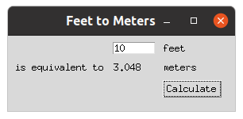

Fonctions
Monday 30 may 2022
Monday 30 may 2022
Les fonctions sont définies au moyen du mot-clé def,
suivi du nom de la fonction, suivi de la liste de leurs
paramètres entre parenthèses. La valeur de
retour d’une fonction est précédée du mot-clé
return.
def fibonacci(n):
"Return a list of n Fibonacci numbers."
result = []
a, b = (0, 1)
while len(result) < n:
result.append(a)
a, b = b, a+b
return resultPour appeler la fonction fibonacci en lui passant comme
paramètre l’argument 10 et récupérer le
résultat :
>>> numbers = fibonacci(10)
>>> numbers
[0, 1, 1, 2, 3, 5, 8, 13, 21, 34]Les paramètres d’une fonction peuvent être accompagné d’une
valeur par défaut. On peut ainsi rajouter un second
paramètre start à la fonction fibonacci et lui
associer la valeur par défaut (0, 1).
def fibonacci(n, start=(0, 1)):
"Return a list of n Fibonacci numbers."
result = []
a, b = start
while len(result) < n:
result.append(a)
a, b = b, a+b
return resultSi l’on ne spécifie pas la valeur du paramètre à l’invocation, sa
valeur par défaut est alors utilisée. Dans le cas présent, cela signifie
que si l’on ne donne pas de second argument à la fonction
fibonacci, elle se comporte comme la première version :
>>> numbers = fibonacci(10)
>>> numbers
[0, 1, 1, 2, 3, 5, 8, 13, 21, 34]Par contre, si l’on fournit un second argument, la valeur par défaut n’est pas utilisée.
>>> numbers = fibonacci(10, (21, 34))
>>> numbers
[21, 34, 55, 89, 144, 233, 377, 610, 987, 1597]Notons que les arguments peuvent en général être positionnels (🇺🇸 : positional arguments) – le paramètre auquel l’argument est affecté dépend de la position de l’argument dans la liste des arguments passés à la fonction – où nommés (🇺🇸 : keyword arguments), auquel cas l’argument est affecté au paramètre du même nom.
Les arguments nommés sont souvent pratiques pour rendre le rôle de
l’argument plus clair. Ainsi ici le second argument de
fibonacci, nommé start, est une paire
d’entiers qui fournit les deux valeurs initiales de la suite de
Fibonacci. Le rôle du code est sans doute plus évident si l’on utilise
un argument nommé :
>>> numbers = fibonacci(10, start=(21, 34))
>>> numbers
[21, 34, 55, 89, 144, 233, 377, 610, 987, 1597]Notons que l’utilisation d’arguments nommés permet aussi de s’affranchir de l’ordre dans lesquels les paramètres de la fonction sont spécificiés :
>>> numbers = fibonacci(start=(21, 34), n=10)
>>> numbers
[21, 34, 55, 89, 144, 233, 377, 610, 987, 1597]* et **Il est possible de stocker des valeurs dans un n-uplet1, puis de les utiliser comme arguments positionnels dans l’appel à une fonction. Par exemple :
>>> args = (10, (21, 34))
>>> fibonacci(*args)
[21, 34, 55, 89, 144, 233, 377, 610, 987, 1597]Un mécanisme similaire existe avec les dictionnaires et les arguments nommés :
>>> kwargs = {"n": 10, "start": (21, 34)}
>>> fibonacci(**kwargs)
[21, 34, 55, 89, 144, 233, 377, 610, 987, 1597]Il est possible d’hybrider les deux approches :
>>> args = (10,)
>>> kwargs = {"start": (21, 34)}
>>> fibonacci(*args, **kwargs)
[21, 34, 55, 89, 144, 233, 377, 610, 987, 1597]Il y a également une forme de symétrie dans ce mécanisme, qui peut être utilisé pour définir une fonction admettant un nombre arbitraire d’arguments positionnels et/ou nommés. Par exemple, avec :
def f(*args, **kwargs):
print(f"args = {args!r}")
print(f"kwargs = {kwargs!r}")on obtient :
>>> f(1, "Hello!")
args = (1, 'Hello!')
kwargs = {}
>>> f(fast=True, verbose=False)
args = ()
kwargs = {'fast': True, 'verbose': False}Python est un langage typé dynamiquement ; la même variable peut désigner un entier à un moment et une chaîne de caractères à un autre. Néanmoins, il est possible – mais c’est optionnel – d’attacher statiquement à une variable une annotation de type (🇺🇸 : type hint).
Par exemple, si vous voulez déclarer que la fonction
fibonacci prend comme argument un entier et une paire
d’entiers et renvoie une liste d’entiers, vous pouvez la définir de la
façon suivante :
def fibonacci(
n: int,
start: tuple[int, int] = (0, 1)
) -> list[int]:
"Return a list of n Fibonacci numbers."
result : list[int] = []
a, b = start
while len(result) < n:
result.append(a)
a, b = b, a+b
return resultCette information peut être utilisée pendant le développement pour détecter d’éventuelles incohérences structurelles de votre code. Ainsi, si vous complétez le code ci-dessus par :
fibonacci("Hello!", True)l’utilisation de mypy vous fournira :
$ mypy fib.py
fibonacci.py:13: error: Argument 1 to "fibonacci" has incompatible type "str"; expected "int"
fibonacci.py:13: error: Argument 2 to "fibonacci" has incompatible type "bool"; expected "Tuple[int, int]"
Found 2 errors in 1 file (checked 1 source file)La portée
(🇺🇸 : scope) d’une variable au sein d’un programme
détermine la manière dont elle est associé à une valeur. Au niveau
supérieur (d’un fichier, d’un module, de l’interpréteur Python, etc.),
les variables sont globales. Le lien entre le nom de la
variable et la valeur qu’elle désigne est décrit par le dictionnaire
globals() : c’est l’espace de nom (🇺🇸 :
namespace) associé aux variables globales.
>>> import math
>>> message = "Hello world"
>>> def answer():
... return 42
...
>>> globs = globals()
>>> globs["math"] is math
True
>>> globs["message"] is message
True
>>> globs["answer"] is answer
TrueAu sein des fonctions, il y a en général des variables
locales à la fonction. C’est en particulier le cas des
paramètres de la fonction, et – en l’absence d’instruction contraire –
des variables qui y sont assignées. Dans le corps de cette fonction,
l’espace de noms associé peut être obtenu en invoquant
locals().
>>> x = 1
>>> def f(y):
... z = 3
... locs = locals()
... print("x" in locs)
... print("y" in locs)
... print("z" in locs)
...
>>> f(2)
False
True
TrueIl est donc possible pour une variable locale de cacher (🇺🇸 : shadow) une variable globale :
>>> a = 1
>>> def f():
... a = 2 # assigned => local
... print(a)
...
>>> a
1
>>> f()
2
>>> a # in the global scope => the value remains unchanged
1En l’absence d’une telle affectation, au sein d’une fonction, les variables globales restent accessibles, mais donc en lecture seule :
>>> a = 1
>>> def f():
... print(a)
...
>>> f()
1Si l’on souhaite affecter une nouvelle valeur à une variable globale dans le corps d’une fonction, il est nécessaire d’y déclarer la variable comme globale :
>>> a = 1
>>> def f():
... global a
... a = 2
...
>>> print(a)
1
>>> f()
>>> print(a)
2Il existe également une portée intégrée (🇺🇸 : built-in) et en cas de fonctions emboitées (🇺🇸 : nested), le concept de portée externe ; cf par exemple la description de la règle LEGB.
On qualifie d’invocable (ou appelable ; 🇺🇸 : callable) tout objet se comportant comme une fonction, c’est-à-dire pouvant être appelé (invoqué) avec la même syntaxe que les fonctions.
Ainsi, l’entier 0 n’est pas invocable :
>>> zero = 0
>>> zero()
Traceback (most recent call last):
File "<stdin>", line 1, in <module>
TypeError: 'int' object is not callablemais la fonction sans argument qui renvoie 0 est
invocable :
>>> def zero_fun():
... return 0
...
>>> zero_fun()
0ce qui n’est pas une surprise puisque c’est une fonction !
>>> type(zero_fun)
<class 'function'>
>>> import types
>>> isinstance(zero_fun, types.FunctionType)
TrueL’invocabilité des objets Python peut être testée avec la fonction
callable :
>>> callable(zero)
False
>>> callable(zero_fun)
TrueNotons que ce test permet de dire si un objet est invocable, mais pas si on peut l’invoquer sans arguments (ni combien d’arguments sont nécessaires, de quel type, etc.). Ainsi :
>>> callable(hash)
TrueMais :
>>> hash()
Traceback (most recent call last):
File "<stdin>", line 1, in <module>
TypeError: hash() takes exactly one argument (0 given)Toutefois :
>>> hash(2**100)
549755813888Pour en savoir plus sur les arguments attendus, il faudra se reporter à la documentation de l’objet considéré.
Un objet comme int est également invocable :
>>> callable(int)
Truece que l’on peut rapidement confirmer expérimentalement :
>>> int()
0
>>> int(0.0)
0
>>> int("0")
0Pourtant, ce n’est pas une function, mais un type :
>>> type(int)
<class 'type'>
>>> type(int) is type # 🤯
True
>>> isinstance(int, types.FunctionType)
FalseRappelons que les types (ou classes) ont vocation, quand on les appelle, à créer des instances du type considéré :
>>> isinstance(int(), int)
True
>>> isinstance(int(0.0), int)
True
>>> isinstance(int("0"), int)
TrueLes classes que vous définissez sont également invocables :
class Transmogrifier:
pass>>> callable(Transmogrifier)
True
>>> transmogrifier = Transmogrifier()
>>> isinstance(transmogrifier, Transmogrifier)
TrueUn transmogrifieur peut transformer son utilisateur en ce qu’il souhaite (par défaut, un tigre 🐯 ; mais on n’a pas spécifié la taille du tigre ! 😉).

class Transmogrifier:
def __init__(self, turn_into="tiger"):
self.turn_into = turn_into
def activate(self, user):
return self.turn_into>>> transmogrifier = Transmogrifier()
>>> transmogrifier.activate("calvin")
'tiger'L’opération transmogrifier.activate("calvin") n’est pas
“atomique” : elle consiste d’abord à obtenir l’attribut
activate de l’objet transmogrifier, puis à
l’invoquer avec l’argument "calvin".
>>> transmogrify = transmogrifier.activate
>>> callable(transmogrify)
True
>>> transmogrify("calvin")
'tiger'Cela est possible car activate est une méthode (liée à
l’instance transmogrifier de Transmogrifier)
et est donc invocable.
>>> transmogrify
<bound method Transmogrifier.activate ...>
>>> type(transmogrify)
<class 'method'>
>>> import types
>>> type(transmogrify) is types.MethodType
TrueNotons qu’à ce stade Transmogrifier est invocable et la
méthode activate des transmogrifieurs également. Mais les
transmogrifieurs eux-mêmes ne le sont pas :
>>> callable(transmogrifier)
FalseSi nous estimons que c’est préférable, nous pouvons faire en sorte qu’ils le deviennent. Il semble assez raisonnable de faire en sorte qu’invoquer un transmogrifieur l’active :
class Transmogrifier:
def __init__(self, turn_into="tiger"):
self.turn_into = turn_into
def activate(self, user):
return self.turn_into
def __call__(self, user):
return self.activate(user)>>> transmogrifier = Transmogrifier()
>>> callable(transmogrifier)
TrueNous pouvons alors simplifier l’usage du transmogrifieur de la façon suivante :
>>> transmogrifier("calvin")
'tiger'Une fonction est génératrice si sa définition
utilise le mot-clé yield.
Appeler une fonction génératrice n’exécute pas son code immédiatement, mais fournit comme valeur de retour un itérateur.
Accéder au premier élément de cet itérateur exécute la fonction
jusqu’à atteindre le premier yield ; la fonction renvoie
alors la valeur fournie au yield, puis pause son
exécution.
Accéder au second élément de cet itérateur reprend le fil de
l’exécution à ce point, jusqu’à atteindre le second yield,
etc.
Ainsi, avec
def one_two_three():
yield 1
yield 2
yield 3on obtient
>>> for i in one_two_three():
... print(i)
...
1
2
3et
>>> list(one_two_three())
[1, 2, 3]def count(start=0, step=1):
"""
Generate the sequence start, start + step, start + 2*step, ...
"""
value = start
while True:
yield value
value += stepUsage :
>>> odd_numbers = count(start=1, step=2)
>>> for number in odd_numbers:
... if number >= 20:
... break
... else:
... print(number)
...
1
3
5
7
9
11
13
15
17
19def cycle(iterable):
"""
Yield all items from an iterable, then repeat this sequence indefinitely.
"""
items = list(iterable)
while items:
for item in items:
yield itemUsage :
>>> for i, item in enumerate(cycle("ABCD")):
... if i >= 12:
... break
... else:
... print(item)
...
A
B
C
D
A
B
C
D
A
B
C
Ddef repeat(object, n=None):
"""
Yield object an object n times (or indefinitely if n is None).
"""
if n is None:
while True:
yield object
else:
for i in range(n):
yield objectUsage :
>>> list(repeat(10, 3))
[10, 10, 10]Implémentez votre propre version des fonctions standards
range, enumerate et zip en
utilisant les fonctions génératrices.
Revoyez la définition de la fonction fibonacci pour
en faire une fonction génératrice, qui renvoie les nombres de Fibonacci
sous forme d’itérateur plutôt que de liste. Faites en sorte que lorsque
l’argument n n’est pas fourni, l’itérateur parcoure
l’intégralité de la suite.
Un des traits de la programmation fonctionelle, un style de programmation que supporte (en partie) Python, est de permettre de manipuler les fonctions comme des objets comme les autres, pouvant être désignés par des variables, stockés dans des conteneurs, passés comme arguments à d’autres fonctions, etc. Une fonction acceptant comme argument des fonctions et/ou en renvoyant est une fonction d’ordre supérieur (🇺🇸 : higher-order function).
Les librairies mathématiques exploitent souvent avec profit ces
fonctions d’ordre supérieures. Ainsi, la librairie de différentiation
automatique Autograd définit
une fonction d’ordre supérieur grad qui associe à une
fonction d’un argument réel sa dérivée.
Sa documentation donne l’exemple suivant d’usage :
>>> import autograd.numpy as np
>>> from autograd import grad
>>> def tanh(x):
... y = np.exp(-2.0 * x)
... return (1.0 - y) / (1.0 + y)
...
>>> d_tanh = grad(tanh) # d_tanh is the derivative of tanh
>>> d_tanh(1.0) # we evaluate it at x = 1.0
0.419974341614026Un autre usage important des fonctions d’ordre supérieur est l’exploitation de fonctions de rappels (🇺🇸 : callbacks), notamment dans les interfaces graphiques.
Par exemple, regardons comment est programmée l’application graphique donnée comme example dans le tutoriel de la bibliothèque Tk :

L’interface graphique est en partie définie par le code :
from tkinter import *
from tkinter import ttk
root = Tk()
root.title("Feet to Meters")
mainframe = ttk.Frame(root, padding="3 3 12 12")
mainframe.grid(column=0, row=0, sticky=(N, W, E, S))
root.columnconfigure(0, weight=1)
root.rowconfigure(0, weight=1)
feet = StringVar()
feet_entry = ttk.Entry(mainframe, width=7, textvariable=feet)
feet_entry.grid(column=2, row=1, sticky=(W, E))
meters = StringVar()
ttk.Label(mainframe, textvariable=meters).grid(column=2, row=2, sticky=(W, E))Retenons simplement à ce stade que root est la fenêtre
principale de l’application, feet le champ de texte où nous
rentrons la valeur de la longueur en pieds et meters le
champ de texte qui devra afficher la longueur équivalent en mètres
lorsque l’on cliquesur le bouton.
Pour que l’application se comporte comme voulu, nous définissons une
fonction calculate qui a chaque fois qu’elle est invoquée,
lit la longueur en pied et écrit la longeur en mètres :
def calculate(*args):
try:
value = float(feet.get())
meters_value = int(0.3048 * value * 1e4 + 0.5) / 1e4
meters.set(meters_value)
except ValueError:
passPuis nous créons un bouton qui rappelle cette fonction (de rappel) à chaque fois qu’il est pressé :
ttk.Button(
mainframe,
text="Calculate",
command=calculate
).grid(column=3, row=3, sticky=W)Quelques labels de plus dans l’interface graphique, un peu de positionnement, et nous sommes prếts à lancer la boucle d’exécution du code !
ttk.Label(mainframe, text="feet").grid(column=3, row=1, sticky=W)
ttk.Label(mainframe, text="is equivalent to").grid(column=1, row=2, sticky=E)
ttk.Label(mainframe, text="meters").grid(column=3, row=2, sticky=W)
for child in mainframe.winfo_children():
child.grid_configure(padx=5, pady=5)
feet_entry.focus()
root.mainloop()Les fonctions lambda en Python sont une construction qui n’augmente pas l’expressivité du langage – on ne peut rien faire avec des fonctions lambda qu’on ne pouvait déjà faire avec les fonctions classiques – mais permet dans certains cas d’obtenir un code plus concis.
Ainsi, pour trouver numériquement le zéro de la fonction \(x \mapsto x^2 - 2\) entre \(0\) et \(2\) avec scipy, après avoir
importé une fonction de recherche de racines :
from scipy.optimize import root_scalar as find_rooton peut définir la fonction qui nous intéresse, ce qui suppose de la
nommer (par exemple f) :
def f(x):
return x*x - 2puis appeler la routine de recherche de zéros de scipy
:
>>> find_root(f, bracket=[0, 2])
converged: True
flag: 'converged'
function_calls: 9
iterations: 8
root: 1.4142135623731364Mais on peut aussi passer l’étape préalable de définition et de
nommage de la function, et faire cet opération à la volée, dans l’appel
à find_root, au moyen d’une fonction lambda :
>>> find_root(lambda x: x*x-2, bracket=[0, 2])
converged: True
flag: 'converged'
function_calls: 9
iterations: 8
root: 1.4142135623731364Le mot-clé lambda fait référence à la notation
traditionnelle du \(\lambda\)-calcul ; on y désignerait la
fonction \(x \mapsto x^2+1\) par la
notation \((\lambda x.x^2+1)\).
Ainsi parlait Wikipédia :
Dans un langage de programmation, une fermeture ou clôture (🇺🇸 : closure) est une fonction accompagnée de son environnement lexical.
L’environnement lexical d’une fonction est l’ensemble des variables non locales qu’elle a capturées, soit par valeur (c’est-à-dire par copie des valeurs des variables), soit par référence (c’est-à-dire par copie des adresses mémoires des variables).
Une fermeture est donc créée, entre autres, lorsqu’une fonction est définie dans le corps d’une autre fonction et utilise des paramètres ou des variables locales de cette dernière.
Source : Fermeture (informatique)
Essayons de donner un exemple concret illustrant cette définition.
La fonction intégrée eval permet de calculer la valeur
d’expressions représentées par des chaînes de caractères. Ainsi :
>>> x = 1
>>> y = 2
>>> eval("x + y")
3Il est également possible d’ignorer l’espace de nom global et de spécifier explicitement l’espace de nom que devra utiliser l’évaluateur :
>>> namespace = {"x": 3, "y": 4}
>>> eval("x + y", namespace)
7Nous aimerions disposer d’une fonction d’ordre supérieur – disons
fun – qui associe à une expression, comme
"x+y", une fonction qui acceptera les arguments nommés
nécessaires pour évaler l’expression – ici x et
y – et renverra la valeur associée de l’expression.
Avec les fermetures de fonctions, rien de plus simple :
def fun(expression):
def f(**kwargs):
return eval(expression, kwargs)
return fOn remarquera que eval(expression, kwargs) utilise la
variable kwargs qui est locale à f (car passée
en paramètre). Mais elle utilise également expression qui
est une variable locale de fun ; elle appartient à
l’environnement lexical de f qui est donc une
fermeture.
Voilà comment utiliser notre fonction fun :
>>> add_xy = fun("x + y")
>>> add_xy(x=4, y=5)
9Les variables non-locales d’une fermeture sont accessibles en lecture seule par défaut. Pour les modifier, il faut au préalable les déclarer explicitement comme non-locales à la fermeture. (La situation est donc similaire celle des variables globales exploitées dans les fonctions.)
Par exemple, la fonction make_get_set génère deux
fermetures qui accèdent à la même variable x (qui est
locale à make_get_set) : get permet de lire la
valeur de x et n’a donc pas besoin de la déclarer comme
non-locale ; mais set doit permettre de changer la valeur
de cette variable et la déclare donc comme non-locale :
def make_get_set(x):
def get():
return x
def set(value):
nonlocal x
x = value
return get, setExemple d’usage de ces fonctions :
>>> get, set = make_get_set(1)
>>> get()
1
>>> set(5)
>>> get()
5Il est bon de savoir que les variables non-locales sont capturées par référence en Python, et non par valeur, ce qui peut dans certains cas rendre votre vie … intéressante ! 😂
Par exemple, le programmeur ayant écrit :
def make_actions():
actions = []
for i in range(3):
def printer():
print(i)
actions.append(printer)
return actionss’attend probablement à générer une liste de 3 actions qui
afficheront respectivement 0, 1 et 2 lorsqu’elles seront appelées. Mais
comme le i utilisé par la fonction printer est
capturé par référence, sa valeur effective est déterminée uniquement au
moment de l’appel print(i). Hors à ce moment-là, la boucle
for a déjà été exécutée, donc i vaut
2. Par conséquent, on obtient en fait :
>>> for action in make_actions():
... action()
...
2
2
2Le “hack” classique pour résoudre ce problème consiste à utiliser le fait que les arguments par défaut d’une fonction sont évalués lors de sa définition. Par conséquent, si l’on définit :
def make_actions():
actions = []
for i in range(3):
def printer(i=i):
print(i)
actions.append(printer)
return actionson obtient comme souhaité :
>>> for action in make_actions():
... action()
...
0
1
2Les décorateurs sont un “sucre syntaxique” utilisant
le symbole @ et facilitant la mise en d’oeuvre d’un schéma
assez courant que nous allons illustrer sur un exemple.
Imaginons que nous ayons développé une fonction
plus_one
def plus_one(x):
return x + 1mais qu’en la testant dans un programme, nous trouvons son comportement mystérieux. Pour comprendre ce qui se passe, nous modifions sa définition pour afficher ses arguments et les valeurs qu’elle renvoie à chaque fois qu’elle est appelée.
def plus_one(x):
print("input:", x)
y = x + 1
print("output:", y)
return yavec la ferme intention de retirer ce code supplémentaire une fois le mystère éclairci.
Ce procédé n’est toutefois pas très satisfaisant. Plutôt que de
modifier le code de plus_one, nous pouvons développer une
fonction debug qui prendra la fonction
plus_one comme argument et renverra une nouvelle fonction
qui fonctionne comme plus_one à ceci près qu’elle affiche
les arguments et la valeur de sortie :
def debug(f):
def f_debug(x):
print("input:", x)
y = f(x)
print("output:", y)
return y
return f_debugPour tester le code en situation réelle, il nous suffit alors de
remplacer la fonction plus_one classique par cette nouvelle
fonction
plus_one = debug(plus_one)puis d’effacer uniquement cette ligne supplémentaire une fois le mystère éclairci.
Il s’avère que le code
def plus_one(x):
return x + 1
plus_one = debug(plus_one)est équivalent à la construction suivante utilisant le décorateur
@debug :
@debug
def plus_one(x):
return x + 1On pourra trouver cette seconde notation plus agréable et lisible !
La fonction d’ordre supérieur count ci-dessous peut être
utilisée sous forme de décorateur pour enregistrer le nombre de fois où
une fonction a été invoquée (le nombre d’appels de la fonction est
stocké dans l’attribut count de la fonction) :
def count(f):
def counted_f(x):
counted_f.count += 1
return f(x)
counted_f.count = 0
return counted_fPar exemple, si l’on recherche à localiser la racine positive de la
fonction \(x \mapsto x^2 - 2\), qui est
\(\sqrt{2}\), on peut la définir en la
décorant avec @count :
@count
def f(x):
return x*x - 2Puis procéder par itérations successives pour produire une estimation de \(\sqrt{2}\) :
>>> f(0)
-2
>>> f(1)
-1
>>> f(2)
2
>>> f(1.5)
0.25
>>> f(1.4)
-0.04000000000000026
>>> f(1.45)
0.10250000000000004
>>> f(1.43)
0.04489999999999972
>>> f(1.42)
0.01639999999999997
>>> f(1.41)
-0.011900000000000244Et constater à posteriori combien d’appels de la fonction
f ont été nécessaires :
>>> f.count
9ou plus généralement un objet itérable.↩︎